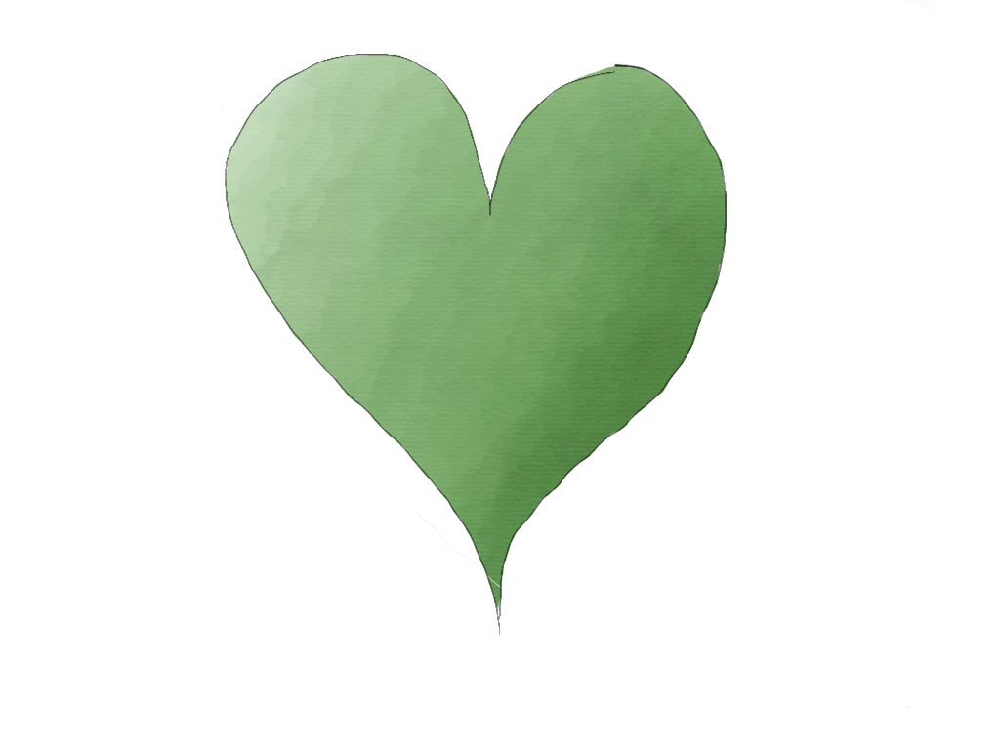

Happy 4th Monthsary ♥
Just a reminder, I love you awlays Mahal
How happy I was?
Before I met you, I always chase for my happiness even though it hard to deal with it. I always look for my happiness even though it hard to find. I tried to be happy again, even if I wasn't. I'd still always try to be happy. But now I stopped chasing happiness when I met you, and finally I stopped searching for my happiness. You 're my happiness and also you are my best friend, You are the best gift in my life, You make me happy, make stronger, make me believe that surrender is not with me. There is no long distance in our love because love knows no distance, and my love for you knows no distance. No matter how painful distance can be, but not having you in my life would be terrible. It's always been you, It was you today, It was you yesterday, It was you tomorrow, It was you next week, It was you every hour, It was you every minute, It was you every second, It was you next month, It was you next year, It was you until end and the rest of my life. It will be you and always you. Te quiero(I love you) mahal ❤
